Chapter 3. Airport Traffic Control - Terminal
Section 10. Arrival Procedures and Separation
3-10-1. LANDING INFORMATION
Provide current landing information, as appropriate, to arriving aircraft. Landing information contained in the ATIS broadcast may be omitted if the pilot states the appropriate ATIS code. Runway, wind, and altimeter may be omitted if a pilot uses the phrase “have numbers.” Issue landing information by including the following:
- Specific traffic pattern information (may be omitted if the aircraft is to circle the airport to the left).
- Runway in use.
- Surface wind.
- Altimeter setting.
- Any supplementary information.
- Clearance to land.
- Requests for additional position reports. Use prominent geographical fixes which can be easily recognized from the air, preferably those depicted on sectional charts. This does not preclude the use of the legs of the traffic pattern as reporting points.
- Ceiling and visibility if either is below basic VFR minima.
- Low level wind shear or microburst advisories when available.
- Issue braking action for the runway in use as received from pilots when braking action advisories are in effect.
- Runway Condition Codes. Furnish RwyCC, as received from the Airport Operator, to aircraft via the ATIS.
- For opposite direction arrival operations, controllers may verbally issue the RwyCC, as identified in the FICON NOTAM, in reverse order. Controllers must not include reversed RwyCC on the ATIS broadcast.
- If the pilot does not indicate the appropriate ATIS code, and when a runway has been shortened, controllers must ensure that pilots receive the runway number combined with a shortened announcement for all arriving aircraft.
3-10-2. FORWARDING APPROACH INFORMATION BY NONAPPROACH CONTROL FACILITIES
- Forward the following, as appropriate, to the control facility having IFR jurisdiction in your area. You may eliminate those items that, because of local conditions or situations, are fully covered in a letter of agreement or a facility directive.
- When you clear an arriving aircraft for a visual approach.
- Aircraft arrival time.
- Cancellation of IFR flight plan.
- Information on a missed approach, unreported, or overdue aircraft.
- Runway in use.
- Weather as required.
- When the weather is below 1,000 feet or 3 miles or the highest circling minimums, whichever is greater, issue current weather to aircraft executing an instrument approach if it changes from that on the ATIS or that previously forwarded to the center/approach control.
3-10-3. SAME RUNWAY SEPARATION
- Separate an arriving aircraft from another aircraft using the same runway by ensuring that the arriving aircraft does not cross the landing threshold until one of the following conditions exists or unless authorized in paragraph 3-10-10, Altitude Restricted Low Approach.
- The other aircraft has landed and is clear of the runway. (See FIG 3-10-1.) Between sunrise and sunset, if you can determine distances by reference to suitable landmarks and the other aircraft has landed, it need not be clear of the runway if the following minimum distance from the landing threshold exists:
FIG 3-10-1Same Runway Separation 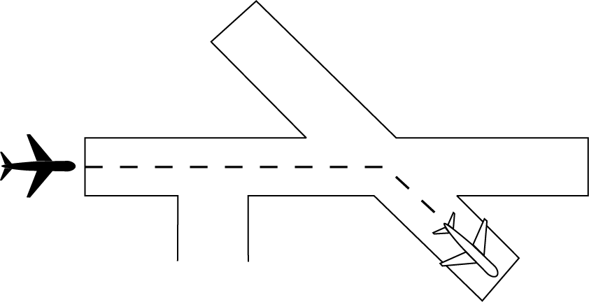
- When a Category I aircraft is landing behind a Category I or II- 3,000 feet.
(See FIG 3-10-2.)FIG 3-10-2Same Runway Separation 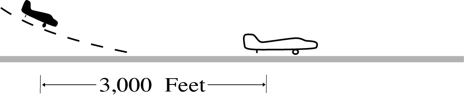
- When a Category II aircraft is landing behind a Category I or II- 4,500 feet.
(See FIG 3-10-3.)FIG 3-10-3Same Runway Separation 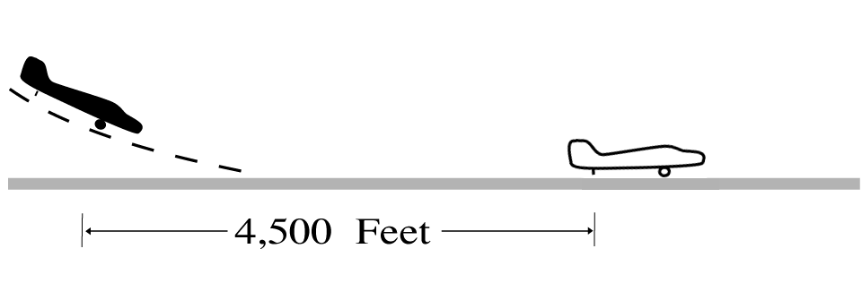
- When a Category I aircraft is landing behind a Category I or II- 3,000 feet.
- The other aircraft has departed and crossed the runway end. (See FIG 3-10-4). If you can determine distances by reference to suitable landmarks and the other aircraft is airborne, it need not have crossed the runway end if the following minimum distance from the landing threshold exists:
- Category I aircraft landing behind Category I or II- 3,000 feet.
- Category II aircraft landing behind Category I or II- 4,500 feet.
- When either is a category III aircraft- 6,000 feet. (See FIG 3-10-5.)
FIG 3-10-4Same Runway Separation 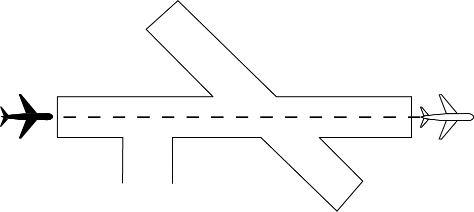
FIG 3-10-5Same Runway Separation 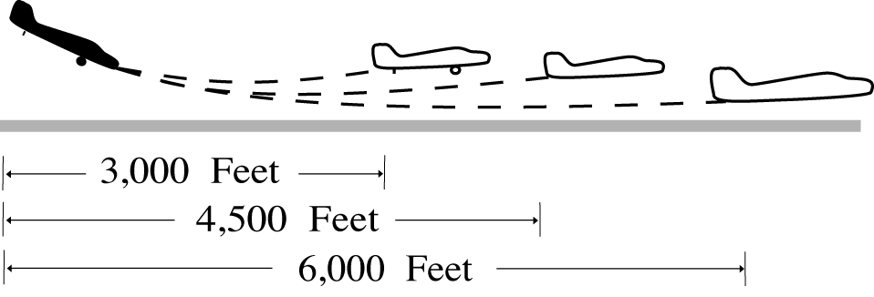
- When the succeeding aircraft is a helicopter or powered‐lift aircraft, visual separation may be applied in lieu of using distance minima.
WAKE TURBULENCE APPLICATION
- The other aircraft has landed and is clear of the runway. (See FIG 3-10-1.) Between sunrise and sunset, if you can determine distances by reference to suitable landmarks and the other aircraft has landed, it need not be clear of the runway if the following minimum distance from the landing threshold exists:
- Issue wake turbulence advisories, and the position, altitude if known, and the direction of flight of departing or arriving aircraft on the same runway or parallel runways separated by less than 2,500 feet to:
- Category B, C, D, E, F, G, H, and I aircraft behind Category A, B, or D aircraft.
- Category E, F, G, H, or I aircraft behind Category C aircraft.
- Category I aircraft behind Category E aircraft.
3-10-4. INTERSECTING RUNWAY/INTERSECTING FLIGHT PATH OPERATIONS
Issue traffic information to each aircraft operating on intersecting runways.
- Separate an arriving aircraft using one runway from another aircraft using an intersecting runway or a nonintersecting runway when the flight paths intersect by ensuring that the arriving aircraft does not cross the landing threshold or flight path of the other aircraft until one of the following conditions exists:
- The preceding aircraft has departed and passed the intersection/flight path or is airborne and turning to avert any conflict. (See FIG 3-10-6 and FIG 3-10-7.)
FIG 3-10-6Intersecting Runway Separation 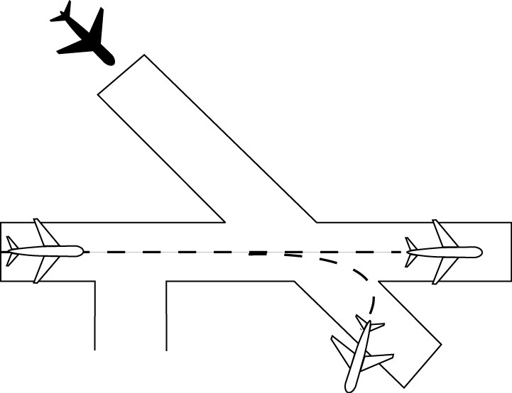
FIG 3-10-7Intersecting Runway Separation 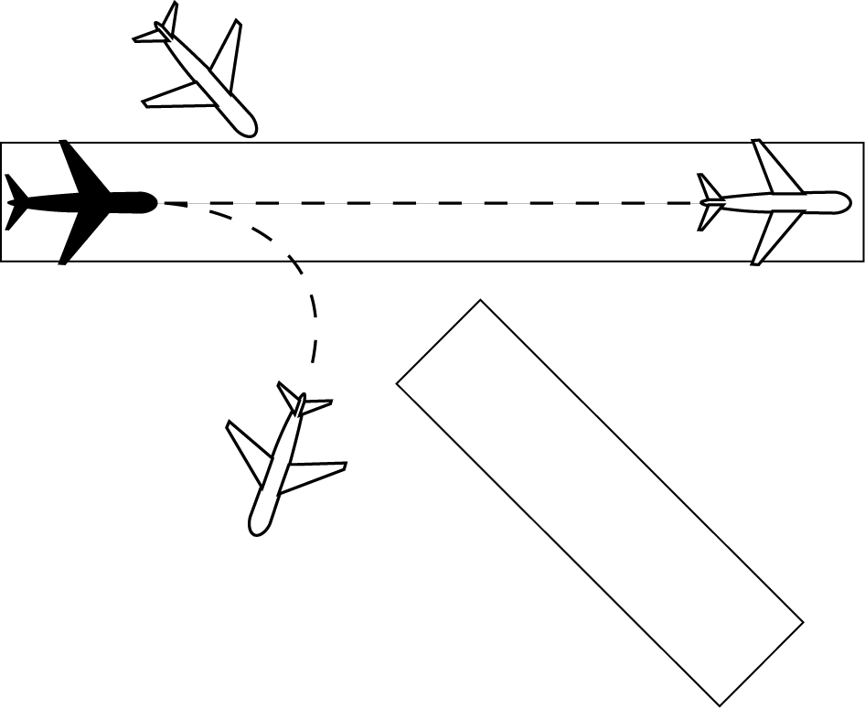
- A preceding arriving aircraft is clear of the landing runway, completed landing roll and will hold short of the intersection/flight path, or has passed the intersection/flight path. (See FIG 3-10-8 and FIG 3-10-9.)
FIG 3-10-8Intersection Runway Separation 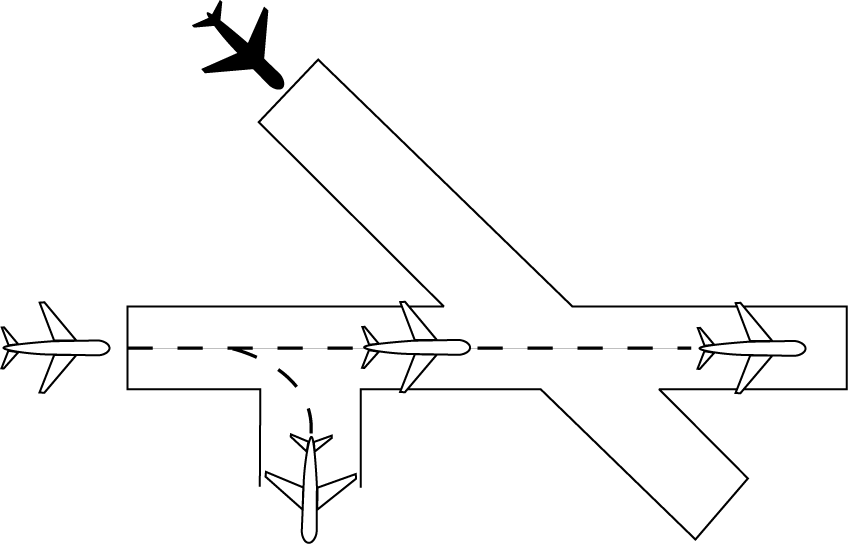
FIG 3-10-9Intersection Runway Separation 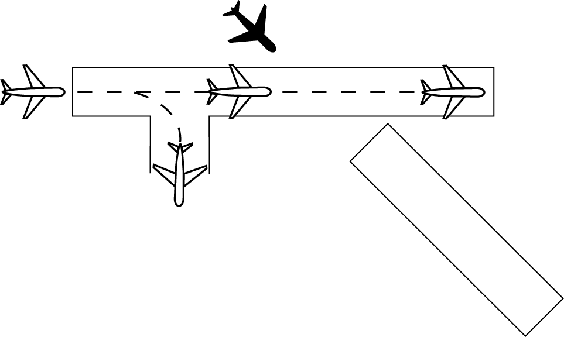
- The preceding aircraft has departed and passed the intersection/flight path or is airborne and turning to avert any conflict. (See FIG 3-10-6 and FIG 3-10-7.)
- USA/USAF/USN NOT APPLICABLE. An arriving aircraft may be authorized to land and hold short of the intersecting runway/intersecting flight path being used by another departing or arriving aircraft in accordance with FAA Order JO 7110.118, Land and Hold Short Operations (LAHSO). The following procedures apply:
- Instruct the arriving aircraft to land and hold short of the intersecting runway/intersecting flight path. In the case of simultaneous landings and no operational benefit is lost, restrict the aircraft of the lesser weight category (if known). (See FIG 3-10-10 and FIG 3-10-11.)
FIG 3-10-10Intersecting Runway Separation 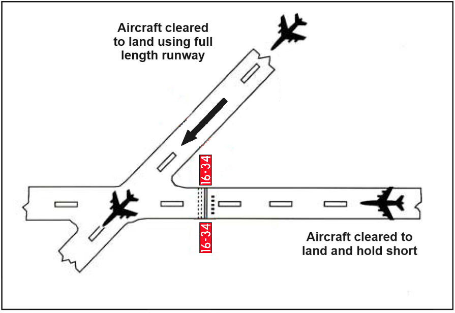
- Issue traffic information to both aircraft involved and obtain an acknowledgment from each.
- The conditions in subparagraphs b1 and b2 above must be met in sufficient time to take other action, if desired by the pilot(s), and no later than the time landing clearance is issued.
WAKE TURBULENCE APPLICATION
- Instruct the arriving aircraft to land and hold short of the intersecting runway/intersecting flight path. In the case of simultaneous landings and no operational benefit is lost, restrict the aircraft of the lesser weight category (if known). (See FIG 3-10-10 and FIG 3-10-11.)
- Separate aircraft landing behind a departing aircraft on a crossing runway if the arrival will fly through the airborne path of the departure by the appropriate radar separation or the following intervals: (See FIG 3-10-11):
- Category B, C, D, E, F, G, H, or I aircraft behind Category A aircraft – 3 minutes.
- Category B, C, D, E, F, G, H, or I aircraft behind Category B or D aircraft – 2 minutes.
- Category E, F, G, H, or I aircraft behind Category C aircraft – 2 minutes.
- Category I aircraft behind Category E aircraft – 2 minutes.
- Issue wake turbulence cautionary advisories, the position, altitude if known, and direction of flight of Category A, B, C, D, or E aircraft to:
FIG 3-10-11Intersecting Runway Separation 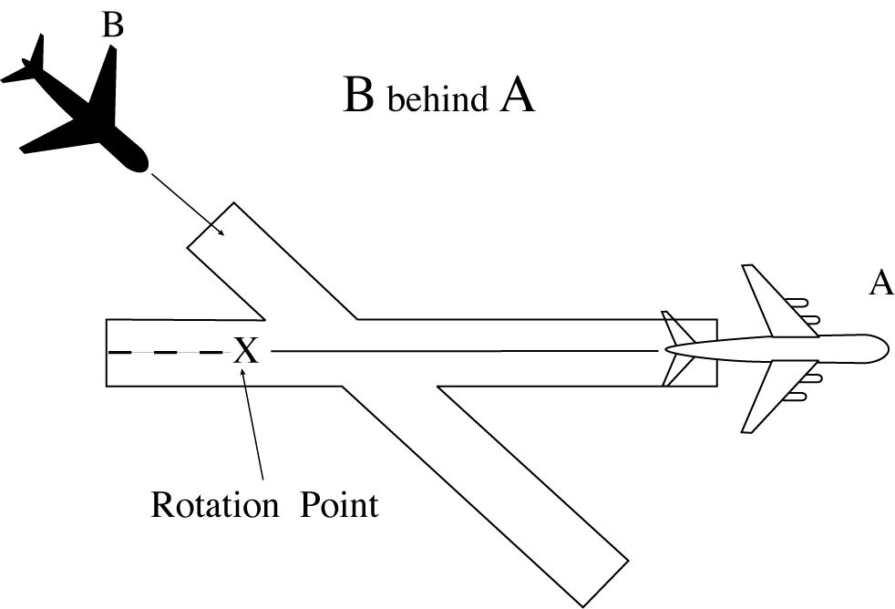
- All aircraft landing on a crossing runway behind a departing aircraft that requires wake turbulence separation behind it if the arrival flight path will cross the takeoff path behind the departing aircraft rotation point. (See FIG 3-10-12.)
FIG 3-10-12Intersecting Runway Separation 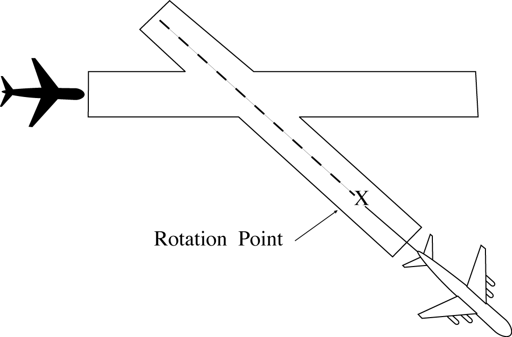
- All VFR aircraft landing on a crossing runway behind an arriving Category A, B, C, or D aircraft and VFR Category I aircraft landing on a crossing runway behind a Category E aircraft, if the arrival flight paths will cross. (See FIG 3-10-13.)
FIG 3-10-13Intersecting Runway Separation 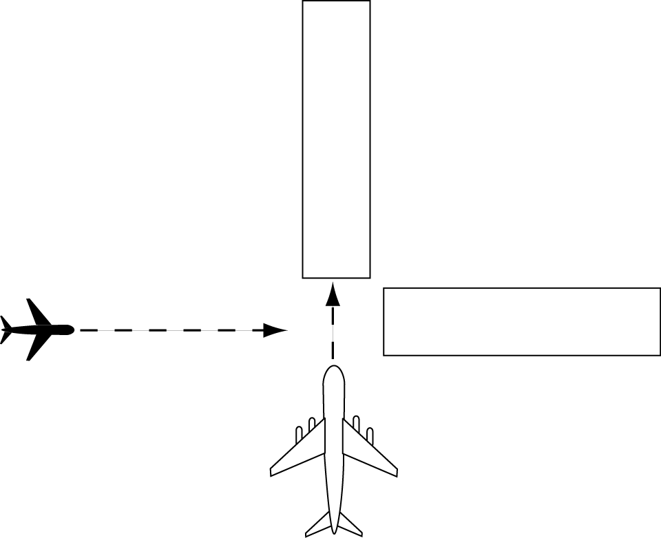
- All aircraft landing on a crossing runway behind a departing aircraft that requires wake turbulence separation behind it if the arrival flight path will cross the takeoff path behind the departing aircraft rotation point. (See FIG 3-10-12.)
3-10-5. LANDING CLEARANCE
- When issuing a clearance to land, first state the runway number followed by the landing clearance.
- USA/USAF/USN NOT APPLICABLE. When issuing a clearance to land and hold short in accordance with FAA Order JO 7110.118, Land and Hold Short Operations (LAHSO), exchange traffic information as necessary. Request a read back of hold short instructions when not received.
- If the landing runway is changed, preface the landing clearance with “change to runway” followed by the runway number. Restate the runway number followed by the landing clearance.
- When you become aware that an aircraft is aligned with the wrong surface, inform the pilot and:
- Issue control instructions/clearances, or
- If time permits, verify the pilot is aligned with the correct runway. Issue control instructions/clearances as necessary.
- Procedures.
- Facilities without a safety logic system or facilities with the safety logic system inoperative or in the limited configuration must not clear an aircraft for a full‐stop, touch‐and‐go, stop‐and‐go, low approach, or option on the same runway with an aircraft holding in position or taxiing to LUAW until the aircraft in position has exited the runway or starts takeoff roll.
- Facilities using safety logic in the full core alert runway configuration may clear an aircraft for a full‐stop, touch‐and‐go, stop‐and‐go, low approach, or option on the same runway with an aircraft holding in position or taxiing to LUAW except when reported weather conditions are less than ceiling 800 feet or visibility less than 2 miles.
- Inform the closest aircraft that is requesting a full‐stop, touch‐and‐go, stop‐and‐go, low approach, or option when there is traffic authorized to LUAW on the same runway.
- USA/USN/USAF. Issue runway identifier along with surface wind when clearing an aircraft to land, touch and go, stop and go, low approach, or the option.
- Whenever a runway length has been temporarily or permanently shortened, state the word “shortened” immediately following the runway number as part of the landing clearance. This information must be issued in conjunction with the landing clearance.
- The addition of “shortened” must be included in the landing clearance for the duration of the construction project when the runway is temporarily shortened.
- The addition of “shortened” must be included in the landing clearance until the Chart Supplement is updated to include the change(s) when the runway is permanently shortened.
- If landing clearance is temporarily withheld, insert the word “shortened” immediately after the runway number to advise the pilot to continue.
3-10-6. ANTICIPATING SEPARATION
- Landing clearance to succeeding aircraft in a landing sequence need not be withheld if you observe the positions of the aircraft and determine that prescribed runway separation will exist when the aircraft crosses the landing threshold. Issue traffic information to the succeeding aircraft if a preceding arrival has not been previously reported and when traffic will be departing prior to their arrival.
- Anticipating separation must not be applied when conducting LUAW operations, except as authorized in subparagraph 3-10-5e2. Issue applicable traffic information when using this provision.
3-10-7. LANDING CLEARANCE WITHOUT OBSERVATION
When an arriving aircraft reports at a position where it should be seen but has not been visually observed or is not observed on the TDW, advise the aircraft as a part of the landing clearance that it is not in sight and restate the landing runway.
3-10-8. WITHHOLDING LANDING CLEARANCE
Do not withhold a landing clearance indefinitely even though it appears a violation of Title 14 of the Code of Federal Regulations has been committed. The apparent violation might be the result of an emergency situation. In any event, assist the pilot to the extent possible.
3-10-9. RUNWAY EXITING
- Instruct aircraft where to turn‐off the runway after landing, when appropriate, and advise the aircraft to hold short of a runway or taxiway if required for traffic.
- Taxi instructions must be provided to the aircraft by the local controller when:
- Compliance with ATC instructions will be required before the aircraft can change to ground control, or
- The aircraft will be required to enter an active runway in order to taxi clear of the landing runway.
- Ground control and local control must protect a taxiway/runway/ramp intersection if an aircraft is required to enter that intersection to clear the landing runway.
- Request a read back of runway hold short instructions when not received from the pilot.
3-10-10. ALTITUDE RESTRICTED LOW APPROACH
A low approach with an altitude restriction of no less than 500 feet above the airport may be authorized except over an aircraft holding in position or a departing aircraft. Do not clear aircraft for restricted altitude low approaches over personnel unless airport authorities have advised these personnel that the approaches will be conducted. Advise the approaching aircraft of the location of applicable ground traffic, personnel, or equipment.
3-10-11. CLOSED TRAFFIC
Approve/disapprove pilot requests to remain in closed traffic for successive operations subject to local traffic conditions.
3-10-12. OVERHEAD MANEUVER
Issue the following to arriving aircraft that will conduct an overhead maneuver:
- Pattern altitude and direction of traffic. Omit either or both if standard or when you know the pilot is familiar with a nonstandard procedure.
- Request for report on initial approach.
- “Break” information and request for pilot report. Specify the point of “break” only if nonstandard. Request the pilot to report “break” if required for traffic or other reasons.
- Overhead maneuver patterns are developed at airports where aircraft have an operational need to conduct the maneuver. An aircraft conducting an overhead maneuver is VFR and the IFR flight plan is canceled when the aircraft reaches the “initial point” on the initial approach portion of the maneuver. The existence of a standard overhead maneuver pattern does not eliminate the possible requirement for an aircraft to conform to conventional rectangular patterns if an overhead maneuver cannot be approved.
FIG 3-10-14Overhead Maneuver 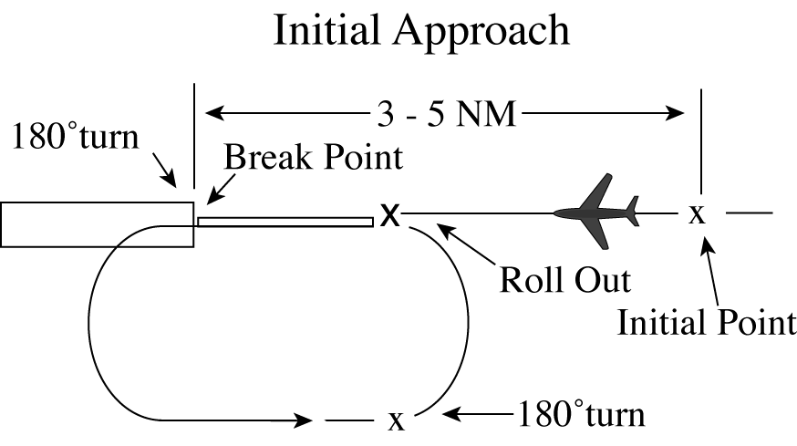
- Timely and positive controller action is required to prevent a conflict when an overhead pattern could extend into the path of a departing or a missed approach aircraft. Local procedures and/or coordination requirements should be set forth in an appropriate letter of agreement, facility directive, base flying manual etc., when the frequency of occurrence warrants.
3-10-13. SIMULATED FLAMEOUT (SFO) APPROACHES/EMERGENCY LANDING PATTERN (ELP) OPERATIONS/PRACTICE PRECAUTIONARY APPROACHES
- Authorize military aircraft to make SFO/ELP/practice precautionary approaches if the following conditions are met:
- A letter of agreement or local operating procedure is in effect between the military flying organization and affected ATC facility.
- Include specific coordination, execution, and approval procedures for the operation.
- The exchange or issuance of traffic information as agreed to in any interfacility letter of agreement is accomplished.
- Include a statement in the procedure that clarifies at which points SFOs/ELPs may/may not be terminated. (See FIG 3-10-15 and FIG 3-10-17.)
- Traffic information regarding aircraft in radio communication with or visible to tower controllers which are operating within or adjacent to the flameout maneuvering area is provided to the SFO/ELP aircraft and other concerned aircraft.
- The high‐key altitude or practice precautionary approach maneuvering altitudes of the aircraft concerned are obtained prior to approving the approach. (See FIG 3-10-15 and FIG 3-10-17.)
- A letter of agreement or local operating procedure is in effect between the military flying organization and affected ATC facility.
- For overhead SFO/ELP approaches:
- Request a report at the entry point.
- Request a report at low key.
- At low key, issue low approach clearance or alternate instructions.
- For straight-in simulation flameout approaches:
- Request a position report from aircraft conducting straight-in SFO approaches.
- At the appropriate position on final (normally no closer than 3 miles), issue low approach clearance or alternate instruction. (See FIG 3-10-16.)
FIG 3-10-15Simulated Flameout [1] 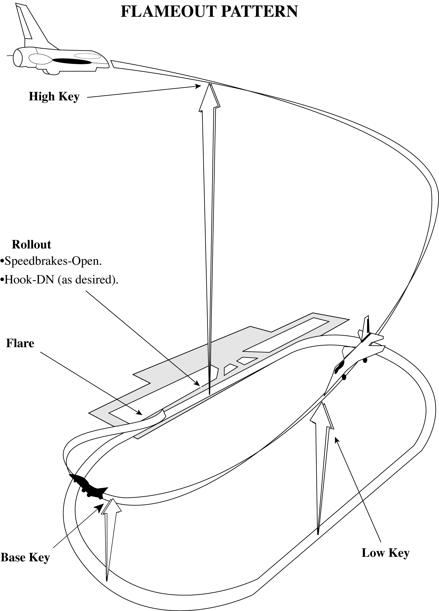
FIG 3-10-16Simulated Flameout [2] 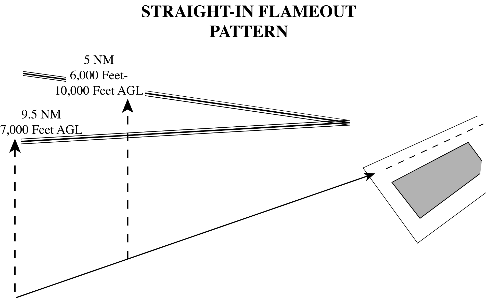
FIG 3-10-17Emergency Landing Pattern 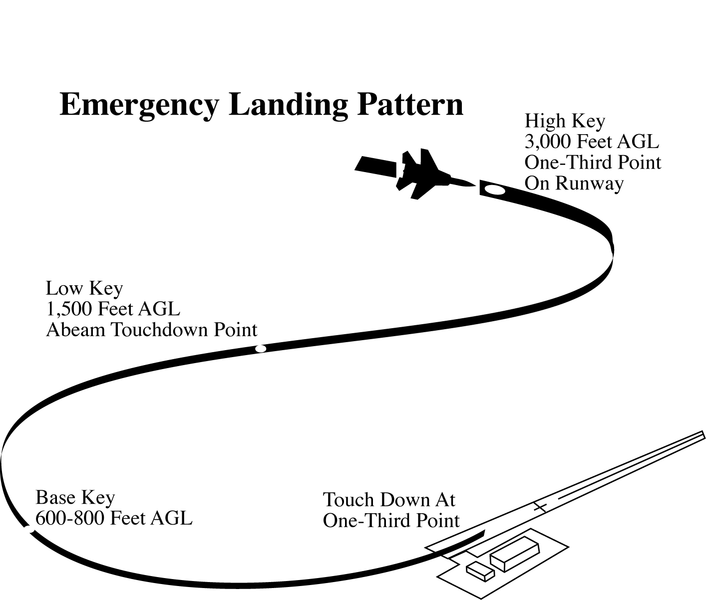